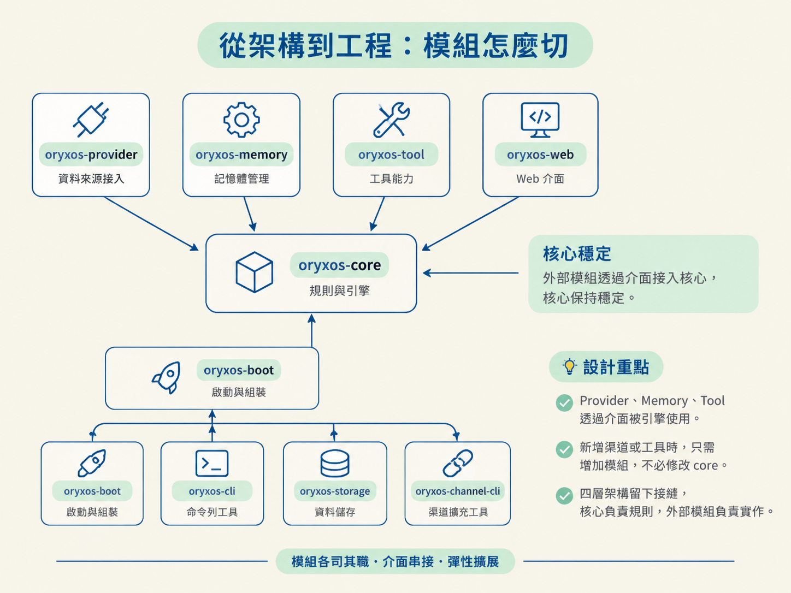
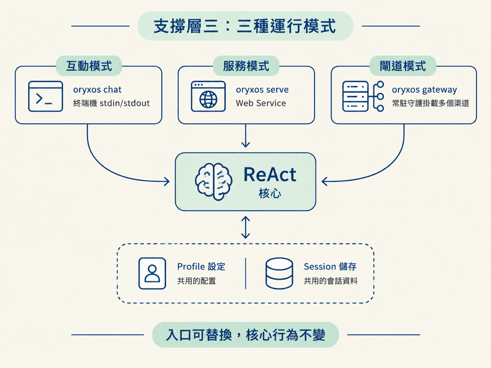

看到四層架構圖時，系統好像已經分門別類；但真正開始寫程式，還是會遇到一個實際問題：每段程式到底該放在哪裡？如果模組切得太大，所有東西會黏成一團；切得太細，又會讓依賴關係像纏在一起的耳機線。OryxOS 用九個 Maven 模組把能力與支撐責任分開，讓核心保持穩定，入口與外部整合則可以替換。
讀完後，你應該能列出九個 Maven 模組與它們的依賴方向，並說明 Profile、ContextLoader、Channel、三種運行模式、CLI 與 ConfigLoader 在支撐層各自扮演的角色。
四層架構是用來理解系統的心智模型；到了工程實作，必須落成實際的 Maven 模組。OryxOS 分成九個模組：五個承擔核心能力，四個負責把系統啟動、接入並維持運作。
| 類別 | 模組 | 職責 |
|---|---|---|
| 核心能力 | oryxos-provider | 對接 LLM |
oryxos-core | ReAct 引擎與所有抽象，其他模組都依賴它 | |
oryxos-memory | 記憶 | |
oryxos-tool | 工具與沙箱 | |
oryxos-web | 對外服務 | |
| 支撐 | oryxos-boot | 啟動與組裝 |
oryxos-cli | Picocli 命令列 | |
oryxos-storage | 持久化 | |
oryxos-channel-cli | CLI 渠道 |
依賴方向是刻意設計的：所有模組都依賴 oryxos-core，因為引擎與介面定義都集中在這裡；最後再由 oryxos-boot 把各個零件組裝成可執行 JAR。
Provider、Memory 與 Tool 都透過介面被引擎使用。這代表未來要新增渠道或工具時，只要增加一個模組，不必修改 core。這個介面就是四層架構刻意留下的接縫：核心負責規則，外部模組負責實作。

oryxos init 會建立一個工作區 .oryxos/。裡面包含 profiles/、memory/MEMORY.md、skills/、mcp_servers.yaml、sessions/、logs/、Bootstrap 檔（AGENTS.md／SOUL.md／USER.md）以及 oryxos.db，同時寫入預設模板與一個預設 Profile。
Profile 可以看成 OryxOS 的「設定單元」。ProfileLoader 會把 YAML 解析成 ProfileRegistry，並在啟動時檢查幾件關鍵事情：provider 是否存在、引用的 tool 是否已註冊、channel 是否支援，以及 bootstrap 檔是否存在。
驗證失敗時只記錄 log，不阻擋整個系統啟動。這個取捨很重要：一個 Profile 壞掉，應該只讓該 Profile 不可用，而不是讓整台 OryxOS 都起不來。多個 Profile 也能並存，各自指定不同的身份、工具、技能與渠道。同一套引擎因此可以掛上不同設定，運行不同的 Agent。
ContextLoader 統一載入兩類內容：Bootstrap（AGENTS.md／SOUL.md／USER.md）與 Skill（SKILL.md）。它們雖然用途不同，但在架構上有共同點：都是要注入 system prompt 的 markdown 內容。
ContextLoader 每次組 prompt 時都重新載入，不使用快取，處理方式和 Memory 一致。這樣檔案內容一旦更新，下一次組 prompt 就能讀到最新版本。也因此，SKILL.md 應該屬於 ContextLoader，而不是 Tool；Skill 是上下文，Tool 才是可被呼叫的能力。
Channel 負責回答「訊息從哪裡來」。目前核心只有 CliChannel，也就是 oryxos chat 使用的 stdin/stdout，並綁定當前 Session。
企業微信、飛書、釘釘與 Slack 等企業 IM 會留到擴展階段。屆時要做的是 Channel Adapter，讓它呼叫 Web Service 的 Agent API。HTTP 接入屬於 Web Service，不屬於 Channel；這條邊界能避免同一份接入邏輯散落在不同層。
同一個核心可以從三個入口啟動。它們共用 Profile 設定與 Session 儲存，真正不同的只有訊息接入方式。
| 模式 | 命令 | 用途 |
|---|---|---|
| 互動 | oryxos chat | 在終端機中一問一答 |
| 服務 | oryxos serve | 啟動 Web Service |
| 閘道 | oryxos gateway | 常駐守護，同時掛載多個渠道 |
核心不需要知道自己是被終端機、HTTP 請求，還是常駐閘道喚醒。入口只負責把訊息送進來，核心則照同一套流程處理。這就是分層的實際價值：入口可以更換，Agent 的行為不必跟著重寫。

CLI 使用 Picocli 實作，主類別 OryxOsCli 註冊 12 個子命令，包括 init、status、chat、serve、gateway、profile 系列、provider list、tool list 與 session list。
CLI 有一個實用的分流：不需要 Spring context 的命令，例如 init 與 profile list，可以直接執行，不必啟動 Spring。這能跳過 2–4 秒的啟動時間，讓常用的查詢與初始化操作立即回應。
ConfigLoader 統一載入 LLM API key、provider 憑證與 MCP 憑證。核心可以從環境變數或獨立的本地設定檔讀取這些資料，Profile 則使用 ${ENV_VAR} 作為佔位符。載入時會驗證必填欄位與格式，發生錯誤時也要清楚說明原因。
完整的加密、憑證輪替與 KMS（金鑰管理服務）會留到擴展階段。不過，ConfigLoader 從第一天就必須存在，因為憑證載入和審計一樣，都是企業級系統不能臨時補上的底線。
九個模組不是任意湊出的數字。五個核心能力各自對應一個模組，再加上啟動、命令列、儲存與渠道四個支撐模組。這樣切分後，每個模組有清楚的單一職責，又不會細到彼此糾纏。
實作時若不確定某段程式該放在哪裡，可以先回頭對照這張表。若怎麼看都找不到合適的位置，通常表示那段程式不是某個具體能力，而是應該放進 oryxos-core 的抽象。當模組邊界能回答「這段程式為什麼在這裡」，架構才真正落到工程上。